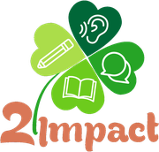

From today the session starts the way every session will start: the question you were left with, then recall from earlier sessions, then a prediction. No teaching in this block. Nothing here is looked up — if you cannot retrieve it, that is the information.
“Cities are increasingly being redesigned so that everything a resident needs is within a fifteen-minute walk. Who benefits most from that, and who loses?”
Answer it aloud for thirty seconds before you read another word of this page. It does not need to be good. It needs to be spoken, and it needs to happen before today's material tells you what to think.
Why: a question you have already tried to answer is a question you read the answer to differently. The unfinished ending of Session 1 was designed for exactly this thirty seconds.
Say or write the answer before you reveal it. A failed retrieval followed by the answer beats a successful re-reading; scoring yourself honestly here is what makes the spacing schedule work.
Type your Session 1 raw scores. The page proposes a rung for today — and you are free to override it, in either direction, at any point in the session.
Support keeps every hint visible. Standard is the session as designed. Stretch hides the support boxes and asks for the harder version of each step. Choosing Stretch on a bad day is not brave; it is how a learner ends a session with no usable feedback.
Part 2 map labelling and Matching Headings are both new to you in this course. Predict anyway — a prediction made in ignorance is still calibration data, and the gap you are about to see is the point.
A planning officer walks a public meeting around the redesigned Eastgate neighbourhood, then around the building at the centre of it. Ten answers, all letters. Today's target is not vocabulary — it is staying on the map. Almost every mark lost in Part 2 is lost in the two seconds after you look away from the diagram.
Before any audio: find the reference point on the map (the tram stop, marked ✚), then find north. Now say aloud, in English, how you would describe where each lettered box sits in relation to that tram stop. If you cannot say “on the far side of” or “set back from” before the recording, you will not hear them in it.
Why: in Part 2 the answer is almost never a word you have to catch — it is a relationship you have to hold. Rehearsing the relationship language converts listening into recognition.
The rule for this block: your finger (or cursor) stays on the map and moves with the speaker. The map is the memory aid. The moment you try to hold the route in your head instead, you lose the next answer as well as the current one — Part 2 errors come in pairs for exactly this reason.
The ten seconds of silence are part of the recording. After each announcer instruction the audio stops for ten seconds and the status line counts them down. That is the exam's own reading time, and it is the only moment you are given to find the reference point and orient the diagram. Use all ten. Candidates who skip it start the talk still looking for north.
The officer is cast female and the announcer neutral, as in the real paper.
Same as Session 1, and it will be the same in Session 24. Use the ? button on every answer you are not certain of. In a labelling task there is one extra repair available to you: check that you have not used the same letter twice, and check that any letter you were sure of is not one the speaker rejected.
The score is the by-product; the label is the output. In Part 2 the six labels are different from Part 1's, because the ways you lose a labelling mark are different.
Find the exact line that carried each answer you missed. Then shadow the twelve phrases below: say each one with the voice, not after it. These twelve do almost all the work in Part 2, and they return in Sessions 5, 9 and 16 in a different diagram.
The five decoys in that recording: the old library offered and withdrawn for the hub, the nursery offered and withdrawn for the health point, the green offered and withdrawn for the market square, the fire-exit end offered and withdrawn for the crèche, and the meeting room used only as a landmark for the kitchen. Four of the five follow the same construction: plausible location → “but” → real location. If you hear but, in the end, originally or actually, your pen should stop moving.
This week's text: what fifteen years of the fifteen-minute city has actually produced, and why the research keeps disagreeing with the brochure. Thirteen questions, twenty minutes.
Skim “Everything within a quarter of an hour” below. The button takes you straight to it and hides the questions for sixty seconds. Then come back here and write one sentence: what is this text arguing?
Why: these are the settings you fixed in Session 1. Set them once here and leave them. A gist read at the same size and contrast as every other session is a gist your eye has been trained on.
Before you read a single heading, go through the seven paragraphs and decide, for each, which sentence carries its main claim. Usually it is the first or the last; when it is neither, that paragraph is the hard one. Do this before the headings and the headings become a matching exercise. Do it after, and they become a vocabulary trap.
The rule that decides every heading:
A heading matches a paragraph's argument, never its subject matter.
Two or three headings will always name something the paragraph genuinely mentions — that is what they are for.
The test is: does this heading describe what the paragraph is doing, or only what it is about?
So eliminate first. Strike every heading that matches a detail, and you will usually be choosing between two.
Twenty minutes, sixty seconds maximum per item, flag and move. Every answer needs a quote, and for a heading the quote is not any line that mentions the topic — it is the sentence that carries the paragraph's main claim. The key will not unlock until all thirteen have one.
Three words and three paraphrase pairs. Six is the limit on purpose. These come back in Sessions 3, 5, 9 and 18.
Session 1 gave you the floor: never one sentence. Today adds the ceiling. Both ends of Part 1 cost marks, they cost them for the same reason, and almost no candidate can feel the difference from inside the answer. So today you measure it instead.
One question, three answers: too short, right, too long. Play them in order and listen for when the examiner would want to interrupt.
The band-7 error is not length. It is the reason for the length. The short answer stops because it has no second move available. The long answer runs because it has no plan for stopping — it keeps adding examples hoping one of them ends the turn. The target answer has exactly two moves and a landing. Twenty to thirty seconds is what two moves and a landing happen to take.
Three of these are landing moves — phrases that end an answer cleanly so you do not have to trail off. Fill each frame with your content.
Eight questions again. Before recording, say your opening line for question 1 out loud, once.
Today's rule: two moves and a landing. Move one answers the question. Move two gives the reason or the example. The landing is a short reflective clause that tells the examiner you have finished. Target 20–30 seconds. The clock is deliberately hidden while you speak and shown only afterwards — watching a timer mid-answer is the fastest way to produce the hesitation it is measuring.
Record. Audit. Change exactly one thing. Record again. One change is audible; three changes are noise. That is the whole design, and it is why this block is the longest in the session.
Binary on purpose. You cannot reliably award yourself a 7.5. You can reliably answer yes or no.
Now play them back-to-back and compare the two durations. If take 2 is inside 20–30 seconds per answer and take 1 was not, you have just learned something no amount of reading about Part 1 would have taught you: the right length is a physical habit, not a piece of knowledge.
Session 1 built the thesis: position plus scope. Today builds the sentence directly beneath it. Twenty minutes, one element, four sentences, no paragraphs. Again: this is deliberate.
Below is a body paragraph with its topic sentence removed. Read the paragraph first, then the two candidates.
The controlling idea, in one line: the part of the topic sentence that tells the reader what the paragraph must now prove. Usually it arrives as because, since, where, unless, only when — a clause that narrows the claim to a mechanism or a condition.
Write the difference as a single sentence. Do not scroll back up. Articulating the rule yourself is worth several times more than reading it, and it is the step everyone skips.
A band-7 topic sentence announces what the paragraph is about. A band-8 topic sentence states a claim and the condition or mechanism that makes it true. The test is predictive: a reader who has seen only that sentence should be able to say what the next four sentences will have to do. If they cannot, you have written a label rather than a topic sentence.
Four prompts. For each, write one body-paragraph topic sentence containing a controlling idea. Roughly ninety seconds each. Do not write the paragraph. Do not write an introduction.
Nothing about grammar, nothing about vocabulary, nothing about the rest of the essay. Only whether it is a topic sentence with a controlling idea.
Take whichever sentence scored lowest and rewrite it. Once. Then stop — you are done writing for today, and that is by design, not by omission.
Three minutes. Short, and not optional — it is what makes Session 3 point at the right thing.
Why: an error corrected once and never revisited comes back on test day. Each of these returns in Sessions 3, 5, 9 and 18 in a new context, and retires only after three consecutive clears.
Finish this sentence. Learners who explain why an answer was right retain and transfer more than learners who only check that it was.
Two sessions is not a trend. A listening score that fell today means almost nothing — Part 2 labelling is a different task from Part 1 form completion, and the first exposure to a task type is not a measurement of ability. What is readable already is your calibration gap: whether you know how well you did before you are told. That number should shrink from here, and it is the one Session 6 will hold you to.
Do not answer it now. There is no box. Let it sit.